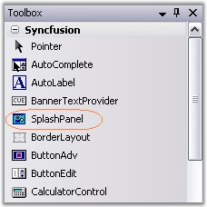

The SplashPanel control provides full support for the Windows Forms designer.
1. Drag-and-drop the SplashPanel control from the toolbox onto the form.

Figure 995: SplashPanel in Toolbox
2. Set the properties for the SplashPanel control and also drag and drop any child controls you want to add to the panel. Set the TimerInterval property to specify the period of time, the SplashPanel needs to be visible.
3. Specify the startup location of the SplashPanel using the DesktopAlignment property.
4. Launch the SplashPanel control by calling the ShowSplash() method.
5. You can cancel the SplashPanel by calling the HideSplash() method.

Figure 996: SplashPanel Control created Through Designer
See Also